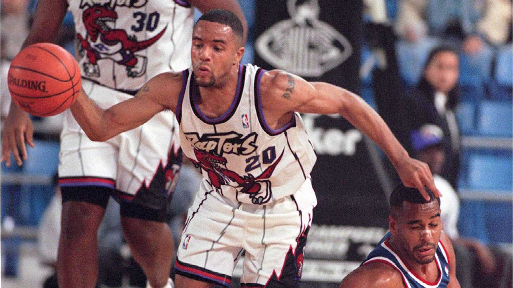
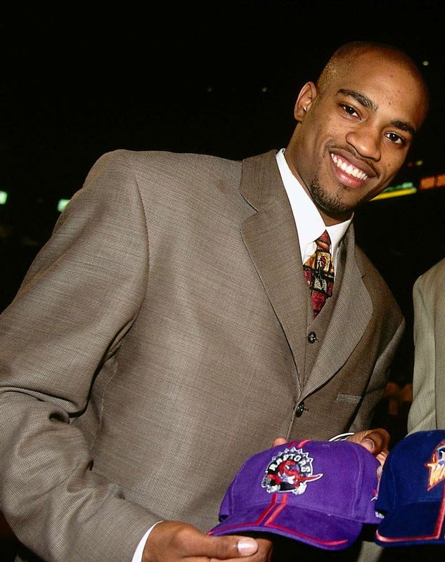
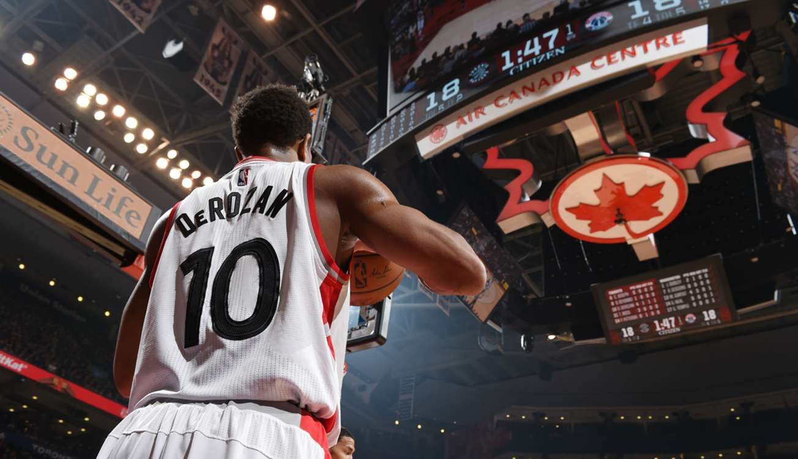

The Toronto Raptors were established in early November of 1993 as part of the NBA’s expansion into Canada. The association awarded its 28th franchise to the city of Toronto. Awarded to a group lead by Toronto businessman John Biltove, on a record fee (for the time) of $125 million. The NBA also awarded a team to Vancouver, being named the Vancouver Grizzlies, and together they were the first Canadian based teams since the Toronto Huskies of 1946-1947. Although the Buffalo Braves had played a total of 16 regular-season games in Toronto, over the five years prior to the Raptors addition to the league.
A nationwide contest was held in May of the following year to decide on the name for the team. “Raptors” was the most voted probably due to the fact that blockbuster movie Jurassic Park had just been released. Later that same month the team logo was revealed and the Toronto Raptors were officially announced as an NBA team.
A couple days later 12-time all-star Isaiah Thomas was announced as the team’s first General Manager.
The two new Canadian teams participated in the leagues tenth ever expansion draft, which allowed them to draft players out of other teams. How this worked is all the other franchises were allowed to bar eight of their players, to take them out of the draft. The two franchises took turns picking from the remaining players until they each had 13 players on their respective teams. Toronto received the first choice and the first player to ever be a part of the Toronto Raptors became B.J. Armstrong from the Chicago Bulls, the best choice of the mediocre talent pool that they were left to pick from. The problem was Armstrong did not want to go and refused to show up to camp the following summer, and the team was forced to trade him, for five players, to the Golden State Warriors.
The other players of the Draft did not give Toronto too much either with only three of them, staying more than one season. Overall the expansion draft was not a success for Toronto. June was the league's real draft, and with the seventh overall pick, the Raptors chose Damon Stoudamire. Who electrified Toronto on arrival.
The 14th of October of 1995 was the first time the Toronto Raptors played an NBA game. Preseason against the Philadelphia 76’rs. A great performance that led them to a 120-107 win. From the very first game Toronto started with a bang.
The first game that Toronto played in the regular season was also a success winning 94-79 against the New Jersey Nets. Although the rest of the season was not spectacular, and we only came out on top of three other teams, including the new Vancouver Grizzlies, It was not absolutely terrible. Damon Stoudamire became Rookie of the Year, and we continued moving forward. In November of the following season our GM Isiah Thomas left the organization, and his former assistant took the reins.
In March of that following season, the construction of a proper stadium for Toronto begins, The Air Canada center, in which they still play today. This is done in the site of the Canada Post Delivery Building, and the stadium still retains the East and South walls of that Structure. The season ends and midway through the next one Maple Leaf Gardens Inc. buys the Raptors and the Air Canada Center. The organization is renamed Maple Leaf Sports and Entertainment to more accurately represent it's businesses. They also alter the plans for the stadium, so that it will accommodate hockey's requirements as well as basketball's.
At the end of the season, Damon Stoudemire leaves to Portland and In June 1998. Something happens that dramatically changes the franchise forever. Vince Carter signs to Toronto. His first year on the team he averaged 18/6/3 and won rookie of the year, and on his second season for the first time ever, the Raptors made the playoffs. That year he also became the first Raptor ever to be an all-star, and won his historic dunk contest. Soon after the Air Canada Center finally opened and every game has been held there ever since.
2001. The conference semi-finals. Against a Phadelphia team led by Allan Iverson. All the way to game seven. Toronto is down by one and there is just two seconds on the clock. Dell curry inbounds Carter catches, fakes, shoots and… misses. An iconic and painful moment of the Raptors history. The 76rs ended up going all the way to the finals and were taken down by Kobe and Shaq, giving them their second of three consecutive titles. The following year Toronto reaches the playoffs again but never make it past the first round.
In 2003 the Raptors are ravaged by injuries, and never reach the playoffs. In what is probably the greatest draft class of all time, the Raptors draft Chris Bosh 4th overall. Chris would become an 11 time all-star and a sure-fire hall of famer. Halfway through the following season. Vince leaves to the nets.
In 2006 Toronto gets the first round pick. It is not a great year to do so, and they draft Andrea Bargnani who never becomes anything over mediocre. That following year the Raptors make it back to the playoffs. Once again never reaching the second round. The same thing happens the following year, and it won't be until 2014 that they reach it again. Toronto drafts DeMar DeRozan in 2009, a future four time all-star, and at the end of the 2010 season Bosh goes to miami joining Dwayne Wade and LeBron James to win titles in 2011 and 2012.
In the summer of 2012 a draft pick is sent to Houston in return for future Raptor legend Kyle Lowry. The legendary DeMar and Kyle duo is born. They would lead the team to five straight playoff appearances, and the first conference finals, but we will get to that later on. The past ends here and the teams journey to succes conitnues in the Present.